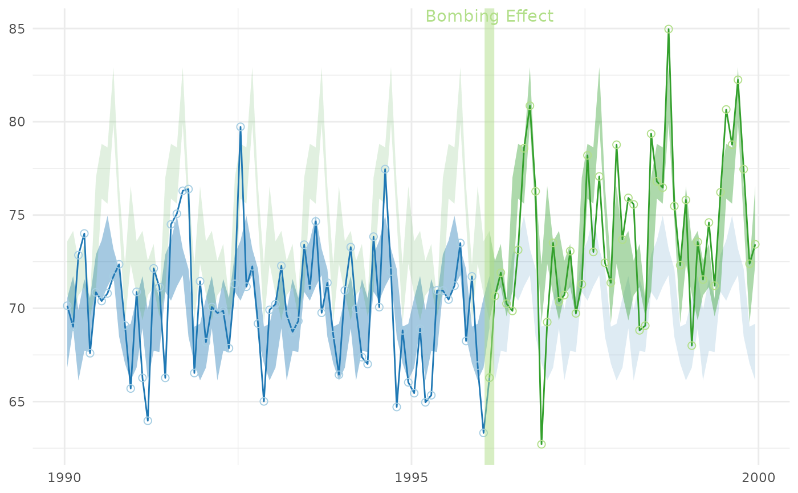

Shows the interrupted time series in Cartesian coordinates and its a periodic/cyclic components.
Usage
cartesian_periodic(
ds_linear,
ds_periodic,
x_name,
y_name,
stage_id_name,
periodic_lower_name = "position_lower",
periodic_upper_name = "position_upper",
palette_dark = NULL,
palette_light = NULL,
change_points = NULL,
change_point_labels = NULL,
draw_periodic_band = TRUE,
jagged_point_size = 2,
jagged_line_size = 0.5,
band_alpha_dark = 0.4,
band_alpha_light = 0.15,
change_line_alpha = 0.5,
change_line_size = 3,
title = NULL,
x_title = NULL,
y_title = NULL
)Arguments
- ds_linear
The data.frame to containing the simple linear data. There should be one record per observation.
- ds_periodic
The data.frame to containing the reoccurring/periodic bands. There should be one record per observation per stage. If there are three stages, this data.frame should have three times as many rows as
ds_linear.- x_name
The variable name containing the date.
- y_name
The variable name containing the dependent/criterion variable.
- stage_id_name
The variable name indicating which stage the record belongs to. For example, before the first interruption, the
stage_idis "1", and is "2" afterwards.- periodic_lower_name
The variable name showing the lower bound of a stage's periodic estimate.
- periodic_upper_name
The variable name showing the upper bound of a stage's periodic estimate.
- palette_dark
A vector of colors used for the dark/heavy graphical elements. The vector should have one color for each
stage_idvalue. If no vector is specified, a default will be chosen, based on the number of stages.- palette_light
A vector of colors used for the light graphical elements. The vector should have one color for each
stage_idvalue. If no vector is specified, a default will be chosen, based on the number of stages.- change_points
A vector of values indicate the interruptions between stages. It typically works best as a Date or a POSIXct class.
- change_point_labels
The text plotted above each interruption.
- draw_periodic_band
A boolean value indicating if the bands should be plotted (whose values are take from the
periodic_lower_nameandperiodic_upper_name).- jagged_point_size
The size of the observed data points.
- jagged_line_size
The size of the line connecting the observed data points.
- band_alpha_dark
The amount of transparency of the band appropriate for a stage's x values.
- band_alpha_light
The amount of transparency of the band comparison stages for a given x value.
- change_line_alpha
The amount of transparency marking each interruption.
- change_line_size
The width of a line marking an interruption.
- title
The string describing the plot.
- x_title
The string describing the x-axis.
- y_title
The string describing the y-axis.
Examples
library(Wats) # Load the package
change_month <- base::as.Date("1996-02-15")
ds_linear <-
Wats::county_month_birth_rate_2005_version |>
dplyr::filter(county_name == "oklahoma") |>
augment_year_data_with_month_resolution(date_name = "date")
h_spread <- function(scores) { quantile(x = scores, probs = c(.25, .75)) }
portfolio <- annotate_data(
ds_linear,
dv_name = "birth_rate",
center_function = median,
spread_function = h_spread
)
cartesian_periodic(
portfolio$ds_linear,
portfolio$ds_periodic,
x_name = "date",
y_name = "birth_rate",
stage_id_name = "stage_id",
change_points = change_month,
change_point_labels = "Bombing Effect"
)
